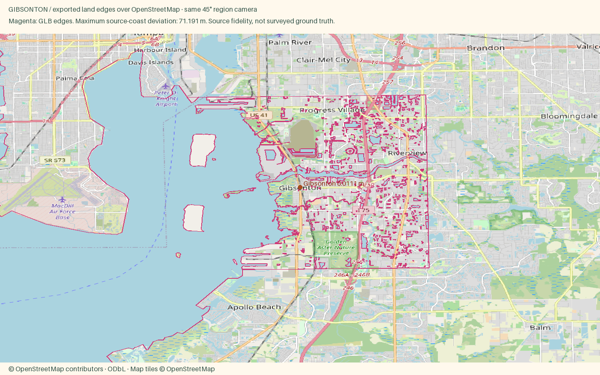

Gibsonton
Low riverfront homes, boat ramps and working yards along the Alafia River and eastern Tampa Bay.
Explore town · Whole coastal region · Style recipe · Accuracy CSV · Price CSV · Checks
$326,250 median listing price · August 2026 · Published source
Williams Park frames the Alafia River crossing, boat ramp and low riverfront neighborhoods. · Hero coordinate source
OpenStreetMap source alignment
71.19 m maximum coastline-to-source difference; 0.0111 m maximum anchor serialization difference. This compares the exported model to the source, not to an independent survey.

Manual input choices
- Town style palette curated from municipal/visitor references; individual facade colors remain illustrative.
- Published town-level listing median, period and inventory are retained; not a pair of example listings.
- Existing Census land context continues beyond the OSM data rectangle, avoiding artificial water edges at the package boundary.
- Incomplete OSM footprints filled by non-overlapping Microsoft imagery footprints with separate source IDs.
- Gibsonton source crop intersected a tiny coast fragment whose original midpoint lay outside the window. Land-side probes on clipped OSM segments restore the small land face; no coastline vertex was moved.
© OpenStreetMap contributors, ODbL · ESA WorldCover 2021 CC BY 4.0 · Microsoft footprints, CDLA Permissive 2.0. Individual facade colors, untagged heights, canopy crowns and vessel occupancy are illustrative. Physical-phone speed is unverified.